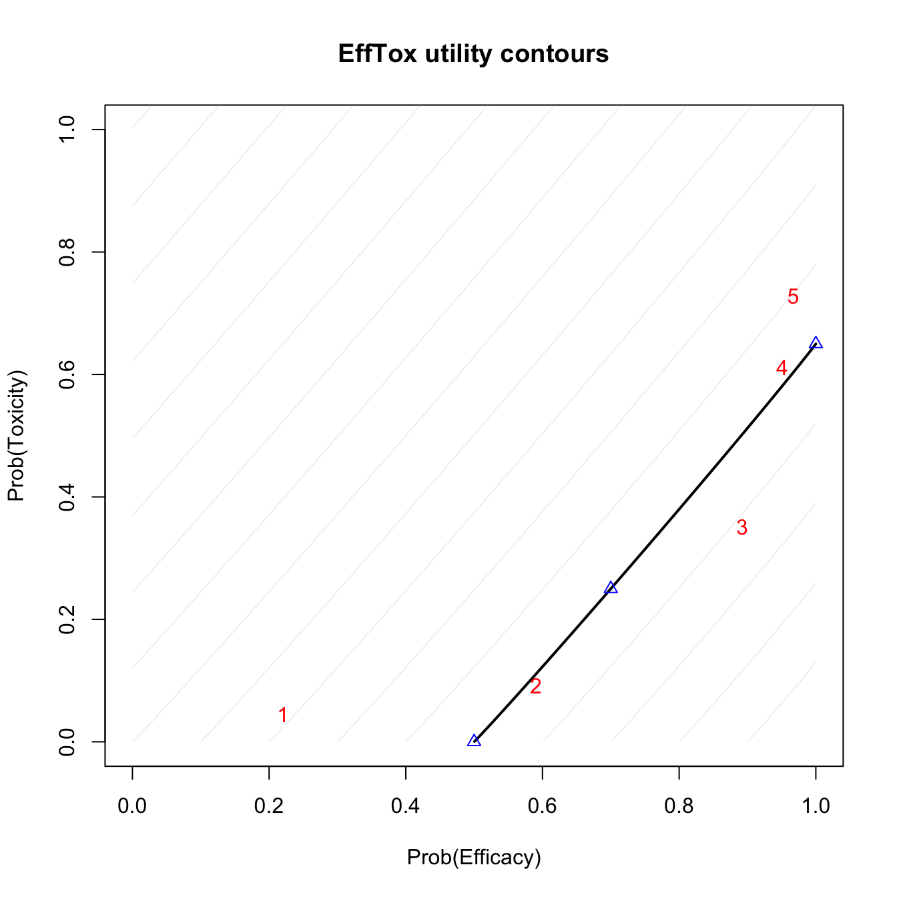

trialr packagetrialr is a collection of Bayesian clinical trial designs implemented in Stan and R.
Many notable Bayesian designs for clinical trials have been published. However, one of the factors that has constrained their adoption is availability of software. We present here some of the most popular, implemented and demonstrated in a consistent style, leveraging the powerful Stan environment.
It should be stressed that Bayesian trialists are not generally without code. Often authors make available code with their design publication. There are also some fantastic packages that aid the use of certain designs. However, challenges to use still persist. The disparate methods are naturally presented in a style that appeals to the particular author. Features implemented in one package for one design may be missing in another. Sometimes the technology chosen may only be available on one particular operating system, or the chosen technology may have fallen into disuse.
trialr seeks to address these problems. Models are specified in Stan, a state-of-the-art environment for Bayesian analysis. It uses Hamiltonian Monte Carlo to take samples from the posterior distributions. This method is more efficient than Gibbs sampling, for instance, and reliable inference can be performed on a few thousand posterior samples. Both R and Stan are available on Mac, Linux, and Windows, and all the examples presented here should work on each operating system. Furthermore, Stan offers a very simple method to split the sampling across n cores, taking full advantage of the modern multicore processor in your computer (probably).
The designs implemented in trialr are introduced briefly below, and developed more fully in vignettes. We focus on real-life usage, including:
ggplot graphics.In all examples, we will need to load trialr
library(trialr)The Continual Reassessment Method was first published by O’Quigley, Pepe and Fisher (1990). It assumes a smooth mathematical form for the dose-toxicity curve to conduct a dose-finding trial seeking a maximum tolerable dose. There are many variations to suit different clinical scenarios and the design has enjoyed relatively common use (although nowhere near as common as the ubiquitous and inferior 3+3 design).
We illustrate the
Thall & Cook’s EffTox is a dose-finding design that uses binary efficacy and toxicity outcomes to select a dose with a high utility score. We present it briefly here there is a much more thorough examination in the EffTox vignette.
We include a convenience function to get parameters for the EffTox demo scenario of a study with five doses:
dat <- efftox_parameters_demo()but generally you would specify parameters in a list. See the EffTox vignette for full details.
Let us add outcomes for 3 patients:
dat$num_patients <- 3
dat$eff <- c(0, 1, 1)
dat$tox <- c(0, 0, 1)
dat$doses <- c(1, 2, 3)To get posterior samples, we invoke Stan the model on our dat object. The EffTox model is include in trialr as stanmodels$EffTox. The stanmodels object is compiled when you install trialr and made available when you load the package.
set.seed(123)
samp <- rstan::sampling(stanmodels$EffTox, data = dat, refresh = FALSE)
#>
#> Gradient evaluation took 9.6e-05 seconds
#> 1000 transitions using 10 leapfrog steps per transition would take 0.96 seconds.
#> Adjust your expectations accordingly!
#>
#>
#>
#> Elapsed Time: 0.515862 seconds (Warm-up)
#> 0.383542 seconds (Sampling)
#> 0.899404 seconds (Total)
#>
#>
#> Gradient evaluation took 3.8e-05 seconds
#> 1000 transitions using 10 leapfrog steps per transition would take 0.38 seconds.
#> Adjust your expectations accordingly!
#>
#>
#>
#> Elapsed Time: 0.535456 seconds (Warm-up)
#> 0.388088 seconds (Sampling)
#> 0.923544 seconds (Total)
#>
#>
#> Gradient evaluation took 3.7e-05 seconds
#> 1000 transitions using 10 leapfrog steps per transition would take 0.37 seconds.
#> Adjust your expectations accordingly!
#>
#>
#>
#> Elapsed Time: 0.527302 seconds (Warm-up)
#> 0.371444 seconds (Sampling)
#> 0.898746 seconds (Total)
#>
#>
#> Gradient evaluation took 3.8e-05 seconds
#> 1000 transitions using 10 leapfrog steps per transition would take 0.38 seconds.
#> Adjust your expectations accordingly!
#>
#>
#>
#> Elapsed Time: 0.51292 seconds (Warm-up)
#> 0.380365 seconds (Sampling)
#> 0.893285 seconds (Total)The efftox_process function is provided to perform the calculations on the posterior samples necessary to follow the design published by Thall & Cook:
decision <- efftox_process(dat, samp)For instance, after evaluation of our three patients, the dose advocated for the next group is dose-level 3:
decision$recommended_dose
#> [1] 3This is not surprising because dose 3 has the highest utility score:
decision$utility
#> [1] -0.63555554 0.03034959 0.23273619 -0.04806662 -0.19326826Sometimes, doses other than the maximal-utility dose will be recommended because of the dose-admissibility rules. See the papers for details.
Functions are provided to create useful plots. For instance, it is illuminating to plot the posterior means of the probabilities of efficacy and toxicity at each of the doses on the trade-off contours. The five doses are shown in red. Doses closer to the lower-right corner have higher utility.
efftox_contour_plot(dat, prob_eff = decision$prob_eff, prob_tox = decision$prob_tox)
title('EffTox utility contours')
This example continues in the EffTox vignette.
There are many publications related to EffTox but the two most important are Dose-Finding Based on Efficacy-Toxicity Trade-Offs (Thall & Cook, 2004) and Effective sample size for computing prior hyperparameters in Bayesian phase I-II dose-finding (Thall, Herrick, Nguyen, Venier & Norris, 2014).